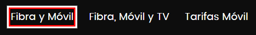

Focus 2.4.7 - (Foco visible)
Access the English version
Comentarios:
- Este marcador añade un foco visible de borde rojo, negro y blanco para verificar funcionalidades cuando el foco no está visible.
- Se puede activar y desactivar al presionar sobre el marcador. Un aviso de alerta notifica el estado Activado o Desactivado.
- Si bien fuerza el foco para que sea visible, puede tener algunos problemas de visualización con algunas páginas o elementos escondidos.

Actualización: versión única.
Focus (2.4.7)
También podés hacer clic derecho y seleccionar "Guardar este enlace como marcador" si estás en móvil o no podés arrastrarlo.
Más información: 2.4.7 Focus visible
Enlace a otros marcadores del autor:
Contacto para Comentarios y Errores:
Si tienes comentarios, recomendaciones o encuentras algún error, por favor, no dudes en contactarme a través de: emilianomontani@gmail.com
¡Espero que esta herramienta te sea útil en tu trabajo diario! Muchas gracias por tu colaboración